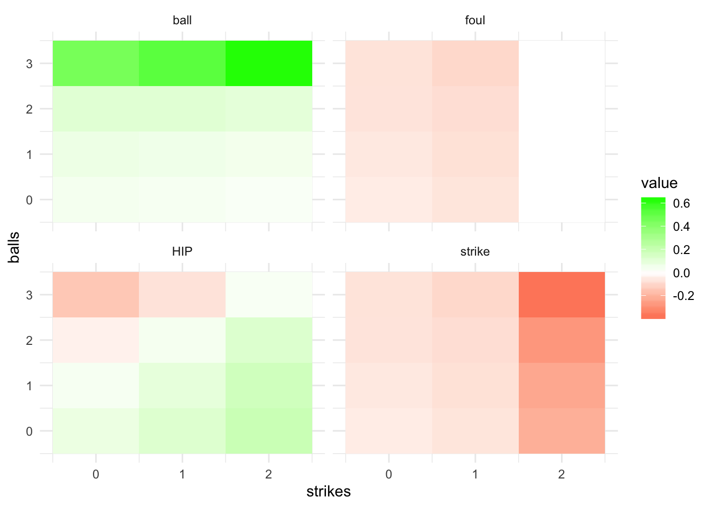

Last updated: 2020-02-20
Checks: 6 0
Knit directory: MLB/
This reproducible R Markdown analysis was created with workflowr (version 1.2.0). The Report tab describes the reproducibility checks that were applied when the results were created. The Past versions tab lists the development history.
Great! Since the R Markdown file has been committed to the Git repository, you know the exact version of the code that produced these results.
Great job! The global environment was empty. Objects defined in the global environment can affect the analysis in your R Markdown file in unknown ways. For reproduciblity it’s best to always run the code in an empty environment.
The command set.seed(20200202) was run prior to running the code in the R Markdown file. Setting a seed ensures that any results that rely on randomness, e.g. subsampling or permutations, are reproducible.
Great job! Recording the operating system, R version, and package versions is critical for reproducibility.
Nice! There were no cached chunks for this analysis, so you can be confident that you successfully produced the results during this run.
Great! You are using Git for version control. Tracking code development and connecting the code version to the results is critical for reproducibility. The version displayed above was the version of the Git repository at the time these results were generated.
Note that you need to be careful to ensure that all relevant files for the analysis have been committed to Git prior to generating the results (you can use wflow_publish or wflow_git_commit). workflowr only checks the R Markdown file, but you know if there are other scripts or data files that it depends on. Below is the status of the Git repository when the results were generated:
Ignored files:
Ignored: .RData
Ignored: .Rhistory
Ignored: .Rproj.user/
Ignored: data/mlb2017data.rds
Ignored: data/mlb2018data.rds
Ignored: data/mlb2019data.rds
Untracked files:
Untracked: .DS_Store
Untracked: code/BBrates.R
Untracked: code/park_factors.R
Untracked: code/xBB.R
Untracked: data/.DS_Store
Untracked: data/SteamerProjBatters2019.csv
Untracked: data/exit_velocity-2018.csv
Untracked: data/exit_velocity-2019.csv
Untracked: data/expected_stats-2018.csv
Untracked: data/expected_stats-2019.csv
Untracked: data/fangraphs-2018.csv
Untracked: data/fangraphs-2019.csv
Untracked: data/standard2015NP.csv
Untracked: data/standard2016.csv
Untracked: data/standard2016NP.csv
Untracked: data/standard2017.csv
Untracked: data/standard2017NP.csv
Untracked: data/standard2018.csv
Untracked: data/standard2018NP.csv
Untracked: data/standard2019.csv
Untracked: data/standard2019NP.csv
Untracked: output/count_woba.rds
Untracked: output/mlb_preproc.rds
Unstaged changes:
Modified: .gitignore
Note that any generated files, e.g. HTML, png, CSS, etc., are not included in this status report because it is ok for generated content to have uncommitted changes.
These are the previous versions of the R Markdown and HTML files. If you’ve configured a remote Git repository (see ?wflow_git_remote), click on the hyperlinks in the table below to view them.
| File | Version | Author | Date | Message |
|---|---|---|---|---|
| Rmd | 0d1e62a | Jason Willwerscheid | 2020-02-20 | wflow_publish(“analysis/countloc_woba.Rmd”) |
| html | 8b9edbe | Jason Willwerscheid | 2020-02-20 | Build site. |
| Rmd | 7d07b26 | Jason Willwerscheid | 2020-02-20 | wflow_publish(“analysis/countloc_woba.Rmd”) |
To account for the juicier balls of 2017 and 2019, I calculate wOBACON (the expected wOBA conditional on the ball being put into play) on a per-year basis:
suppressMessages(library(tidyverse))
all_pitches <- readRDS("output/mlb_preproc.rds")
wobacon <- all_pitches %>%
filter(contact == 1 & foul == 0) %>%
group_by(game_year) %>%
summarize(wOBACON = sum(woba_value) / sum(woba_denom))
knitr::kable(wobacon, digits = 3)| game_year | wOBACON |
|---|---|
| 2017 | 0.395 |
| 2018 | 0.385 |
| 2019 | 0.404 |
I also calculate expected wOBA conditional on the pitch count (the idea is described in Tango, Lichtman, and Dolphin). I want these on a per-year basis as well, but for less frequent pitch counts like 3-0, the standard errors associated with the empirical means are a bit too large for my taste. Thus I make the additional assumption that year-to-year differences are constant across pitch counts. (I could have also assumed that the ratios are constant, but differences are easier to interpret.) I give the complete table below: one can verify that the fitted wOBA values are all very reasonable given the empirical wOBAs and SEs, and they have the convenient property that 2017 values are all one point higher than 2019 values, which are in turn 8 points higher than 2018 values.
count_woba <- all_pitches %>%
group_by(game_year, balls, strikes) %>%
summarize(empirical_wOBA = sum(pa_woba_value) / sum(pa_woba_denom),
empirical_SE = sd(pa_woba_value[pa_woba_denom > 0]) / sqrt(sum(pa_woba_denom))) %>%
ungroup() %>%
arrange(balls, strikes, game_year)
lm_fit <- lm(pa_woba_value ~ factor(game_year) + factor(balls)*factor(strikes),
data = filter(all_pitches, pa_woba_denom > 0))
lm_preds <- predict(lm_fit, newdata = count_woba)
count_woba <- count_woba %>%
mutate(fitted_wOBA = lm_preds,
diff = fitted_wOBA - empirical_wOBA)
knitr::kable(count_woba, digits = 3) | game_year | balls | strikes | empirical_wOBA | empirical_SE | fitted_wOBA | diff |
|---|---|---|---|---|---|---|
| 2017 | 0 | 0 | 0.334 | 0.001 | 0.334 | 0.000 |
| 2018 | 0 | 0 | 0.324 | 0.001 | 0.325 | 0.001 |
| 2019 | 0 | 0 | 0.334 | 0.001 | 0.333 | -0.001 |
| 2017 | 0 | 1 | 0.283 | 0.002 | 0.283 | 0.000 |
| 2018 | 0 | 1 | 0.276 | 0.002 | 0.275 | -0.001 |
| 2019 | 0 | 1 | 0.281 | 0.002 | 0.282 | 0.001 |
| 2017 | 0 | 2 | 0.209 | 0.002 | 0.214 | 0.005 |
| 2018 | 0 | 2 | 0.208 | 0.002 | 0.205 | -0.003 |
| 2019 | 0 | 2 | 0.215 | 0.003 | 0.213 | -0.002 |
| 2017 | 1 | 0 | 0.376 | 0.002 | 0.374 | -0.002 |
| 2018 | 1 | 0 | 0.362 | 0.002 | 0.365 | 0.003 |
| 2019 | 1 | 0 | 0.374 | 0.002 | 0.373 | -0.001 |
| 2017 | 1 | 1 | 0.315 | 0.002 | 0.313 | -0.002 |
| 2018 | 1 | 1 | 0.304 | 0.002 | 0.305 | 0.001 |
| 2019 | 1 | 1 | 0.311 | 0.002 | 0.312 | 0.001 |
| 2017 | 1 | 2 | 0.231 | 0.002 | 0.235 | 0.004 |
| 2018 | 1 | 2 | 0.230 | 0.002 | 0.227 | -0.004 |
| 2019 | 1 | 2 | 0.234 | 0.002 | 0.234 | 0.000 |
| 2017 | 2 | 0 | 0.441 | 0.003 | 0.440 | -0.001 |
| 2018 | 2 | 0 | 0.430 | 0.003 | 0.431 | 0.001 |
| 2019 | 2 | 0 | 0.439 | 0.004 | 0.439 | 0.000 |
| 2017 | 2 | 1 | 0.371 | 0.003 | 0.369 | -0.002 |
| 2018 | 2 | 1 | 0.360 | 0.003 | 0.360 | 0.000 |
| 2019 | 2 | 1 | 0.366 | 0.003 | 0.368 | 0.002 |
| 2017 | 2 | 2 | 0.279 | 0.002 | 0.281 | 0.002 |
| 2018 | 2 | 2 | 0.275 | 0.002 | 0.272 | -0.003 |
| 2019 | 2 | 2 | 0.279 | 0.002 | 0.280 | 0.001 |
| 2017 | 3 | 0 | 0.548 | 0.005 | 0.553 | 0.004 |
| 2018 | 3 | 0 | 0.548 | 0.005 | 0.544 | -0.004 |
| 2019 | 3 | 0 | 0.552 | 0.005 | 0.552 | -0.001 |
| 2017 | 3 | 1 | 0.478 | 0.004 | 0.480 | 0.002 |
| 2018 | 3 | 1 | 0.471 | 0.004 | 0.471 | 0.000 |
| 2019 | 3 | 1 | 0.480 | 0.004 | 0.479 | -0.002 |
| 2017 | 3 | 2 | 0.382 | 0.003 | 0.378 | -0.004 |
| 2018 | 3 | 2 | 0.367 | 0.003 | 0.369 | 0.002 |
| 2019 | 3 | 2 | 0.375 | 0.003 | 0.377 | 0.002 |
Finally, I calculate the value of a ball, strike, foul ball, and hit into play conditional on the pitch count.
For example, let the count be 0-2, which in 2019 is associated with an expected wOBA of 0.213. A ball will bring the count to 1-2, which has a wOBA of 0.234, so the value of a ball at 0-2 is 0.021. (And, due to the convenient assumption I made above, this value is constant from year to year.) A strike will result in a strikeout, which brings the wOBA down to zero: thus the value of a strike at 0-2 is -0.213. A foul ball does not change the count, so its value is zero. Finally, putting the ball into play brings the wOBA up to 0.404 (the wOBACON for 2019), so its value is 0.191. The complete table is below.
event_vals <- count_woba %>%
rename(wOBA = fitted_wOBA) %>%
select(game_year, balls, strikes, wOBA)
helper_df <- tibble(balls = 4, strikes = 0:2, wOBA = 1, dummy = 1) %>%
bind_rows(tibble(strikes = 3, balls = 0:3, wOBA = 0, dummy = 1)) %>%
full_join(tibble(game_year = 2017:2019, dummy = 1), by = "dummy") %>%
select(-dummy)
event_vals <- event_vals %>%
bind_rows(helper_df)
event_vals <- event_vals %>%
left_join(event_vals, by = "game_year", suffix = c("", "_next")) %>%
filter((balls_next == balls + 1 & strikes_next == strikes)
| (strikes_next == strikes + 1 & balls_next == balls)) %>%
mutate(event = ifelse(strikes_next == strikes + 1, "strike", "ball"),
wOBA_change = wOBA_next - wOBA) %>%
filter(balls < 4, strikes < 3) %>%
select(game_year, balls, strikes, wOBA, event, wOBA_change) %>%
spread(key = "event", value = "wOBA_change") %>%
rename(strike_value = strike, ball_value = ball)
# Foul balls:
event_vals <- event_vals %>%
mutate(foul_value = ifelse(strikes == 2, 0, strike_value))
# Hit into play:
event_vals <- event_vals %>%
left_join(wobacon, by = "game_year") %>%
mutate(HIP_value = wOBACON - wOBA)
event_vals <- event_vals %>%
select(-wOBA, -wOBACON) %>%
arrange(balls, strikes, game_year)
knitr::kable(event_vals, digits = 3)| game_year | balls | strikes | ball_value | strike_value | foul_value | HIP_value |
|---|---|---|---|---|---|---|
| 2017 | 0 | 0 | 0.040 | -0.050 | -0.050 | 0.061 |
| 2018 | 0 | 0 | 0.040 | -0.050 | -0.050 | 0.059 |
| 2019 | 0 | 0 | 0.040 | -0.050 | -0.050 | 0.071 |
| 2017 | 0 | 1 | 0.030 | -0.070 | -0.070 | 0.112 |
| 2018 | 0 | 1 | 0.030 | -0.070 | -0.070 | 0.110 |
| 2019 | 0 | 1 | 0.030 | -0.070 | -0.070 | 0.121 |
| 2017 | 0 | 2 | 0.022 | -0.214 | 0.000 | 0.182 |
| 2018 | 0 | 2 | 0.022 | -0.205 | 0.000 | 0.180 |
| 2019 | 0 | 2 | 0.022 | -0.213 | 0.000 | 0.191 |
| 2017 | 1 | 0 | 0.066 | -0.061 | -0.061 | 0.021 |
| 2018 | 1 | 0 | 0.066 | -0.061 | -0.061 | 0.019 |
| 2019 | 1 | 0 | 0.066 | -0.061 | -0.061 | 0.031 |
| 2017 | 1 | 1 | 0.055 | -0.078 | -0.078 | 0.082 |
| 2018 | 1 | 1 | 0.055 | -0.078 | -0.078 | 0.080 |
| 2019 | 1 | 1 | 0.055 | -0.078 | -0.078 | 0.091 |
| 2017 | 1 | 2 | 0.046 | -0.235 | 0.000 | 0.160 |
| 2018 | 1 | 2 | 0.046 | -0.227 | 0.000 | 0.158 |
| 2019 | 1 | 2 | 0.046 | -0.234 | 0.000 | 0.169 |
| 2017 | 2 | 0 | 0.113 | -0.071 | -0.071 | -0.045 |
| 2018 | 2 | 0 | 0.113 | -0.071 | -0.071 | -0.047 |
| 2019 | 2 | 0 | 0.113 | -0.071 | -0.071 | -0.035 |
| 2017 | 2 | 1 | 0.111 | -0.088 | -0.088 | 0.027 |
| 2018 | 2 | 1 | 0.111 | -0.088 | -0.088 | 0.025 |
| 2019 | 2 | 1 | 0.111 | -0.088 | -0.088 | 0.036 |
| 2017 | 2 | 2 | 0.097 | -0.281 | 0.000 | 0.114 |
| 2018 | 2 | 2 | 0.097 | -0.272 | 0.000 | 0.113 |
| 2019 | 2 | 2 | 0.097 | -0.280 | 0.000 | 0.124 |
| 2017 | 3 | 0 | 0.447 | -0.073 | -0.073 | -0.157 |
| 2018 | 3 | 0 | 0.456 | -0.073 | -0.073 | -0.159 |
| 2019 | 3 | 0 | 0.448 | -0.073 | -0.073 | -0.148 |
| 2017 | 3 | 1 | 0.520 | -0.102 | -0.102 | -0.084 |
| 2018 | 3 | 1 | 0.529 | -0.102 | -0.102 | -0.086 |
| 2019 | 3 | 1 | 0.521 | -0.102 | -0.102 | -0.075 |
| 2017 | 3 | 2 | 0.622 | -0.378 | 0.000 | 0.018 |
| 2018 | 3 | 2 | 0.631 | -0.369 | 0.000 | 0.016 |
| 2019 | 3 | 2 | 0.623 | -0.377 | 0.000 | 0.027 |
I prefer visualizations to tables, so I include a visualization of event values for 2019. Results are more or less as expected: a strike is much more valuable when it’s the third strike (and especially so at 3-2); a ball is more valuable when it’s the fourth ball (and again, especially so at 3-2); and putting the ball into play is more valuable when it’s a pitcher’s count. Interestingly, a batter is better off taking a strike at 3-0 than putting the ball into play. The implication is that an average hitter should never swing at a 3-0 pitch.
plot_df <- event_vals %>%
filter(game_year == 2019) %>%
gather(key = "event", value = "value", -game_year, -balls, -strikes) %>%
mutate(event = str_remove(event, "_value"))
ggplot(plot_df,
aes(x = strikes, y = balls, fill = value)) +
geom_tile() +
theme_minimal() +
scale_fill_gradient2(low = "red", high = "green") +
facet_wrap(~event, nrow = 2, ncol = 2)
| Version | Author | Date |
|---|---|---|
| 8b9edbe | Jason Willwerscheid | 2020-02-20 |
saveRDS(all_pitches, "output/count_woba.rds")
sessionInfo()R version 3.5.3 (2019-03-11)
Platform: x86_64-apple-darwin15.6.0 (64-bit)
Running under: macOS Mojave 10.14.6
Matrix products: default
BLAS: /Library/Frameworks/R.framework/Versions/3.5/Resources/lib/libRblas.0.dylib
LAPACK: /Library/Frameworks/R.framework/Versions/3.5/Resources/lib/libRlapack.dylib
locale:
[1] en_US.UTF-8/en_US.UTF-8/en_US.UTF-8/C/en_US.UTF-8/en_US.UTF-8
attached base packages:
[1] stats graphics grDevices utils datasets methods base
other attached packages:
[1] forcats_0.4.0 stringr_1.4.0 dplyr_0.8.0.1 purrr_0.3.2
[5] readr_1.3.1 tidyr_0.8.3 tibble_2.1.1 ggplot2_3.2.0
[9] tidyverse_1.2.1
loaded via a namespace (and not attached):
[1] Rcpp_1.0.1 highr_0.8 cellranger_1.1.0 pillar_1.3.1
[5] compiler_3.5.3 git2r_0.25.2 workflowr_1.2.0 tools_3.5.3
[9] digest_0.6.18 lubridate_1.7.4 jsonlite_1.6 evaluate_0.13
[13] nlme_3.1-137 gtable_0.3.0 lattice_0.20-38 pkgconfig_2.0.2
[17] rlang_0.4.2 cli_1.1.0 rstudioapi_0.10 yaml_2.2.0
[21] haven_2.1.1 xfun_0.6 withr_2.1.2 xml2_1.2.0
[25] httr_1.4.0 knitr_1.22 hms_0.4.2 generics_0.0.2
[29] fs_1.2.7 rprojroot_1.3-2 grid_3.5.3 tidyselect_0.2.5
[33] glue_1.3.1 R6_2.4.0 readxl_1.3.1 rmarkdown_1.12
[37] modelr_0.1.5 magrittr_1.5 whisker_0.3-2 backports_1.1.3
[41] scales_1.0.0 htmltools_0.3.6 rvest_0.3.4 assertthat_0.2.1
[45] colorspace_1.4-1 labeling_0.3 stringi_1.4.3 lazyeval_0.2.2
[49] munsell_0.5.0 broom_0.5.1 crayon_1.3.4